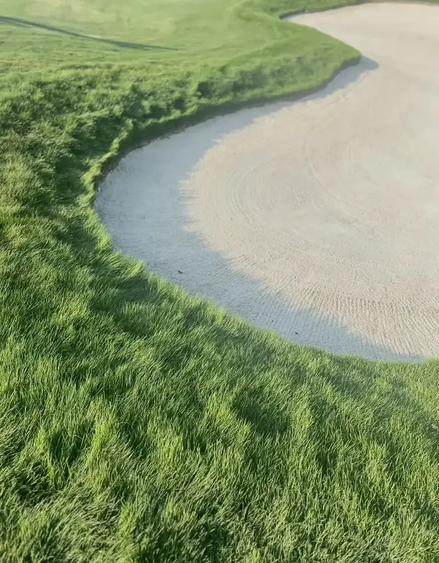
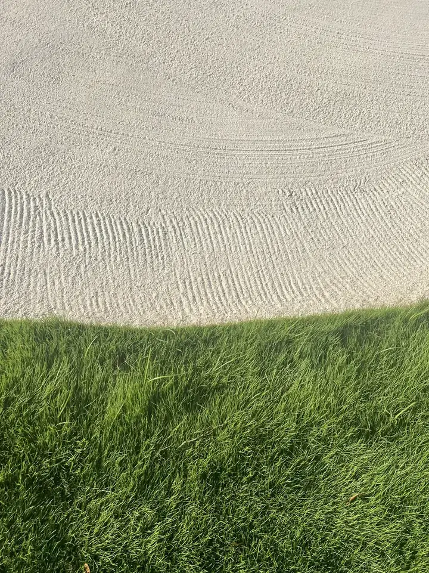
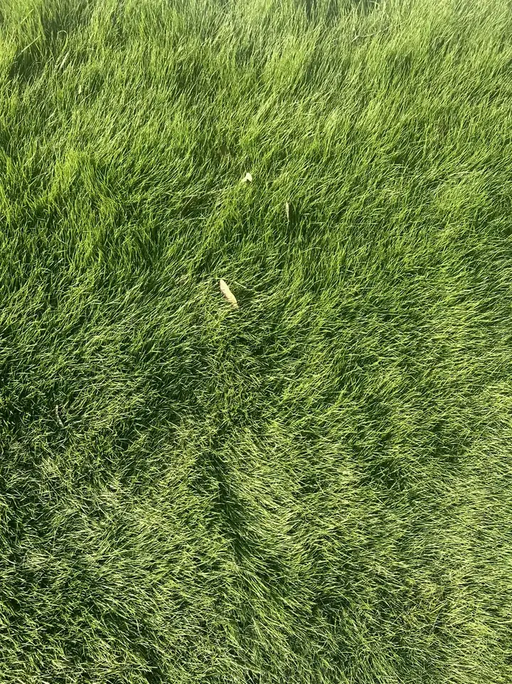

Winning score
−9HMG Junior Championship
AJGA, Hesperia 2024

LMU Men’s Golf
A first-year at Loyola Marymount, playing for the Lions and studying finance. Raised on San Diego golf, tested on national stages, and now competing at the Division I level.

Winning score
−9AJGA, Hesperia 2024
Low 54
199San Diego Junior Am, 2023 · won in a playoff
Best finish
T2AJGA, 2025
Consistency
10/12SoCal PGA Junior Tour, 2025

First year, West Coast Conference. LMU team ranked No. 48 nationally in October 2026.
Southern-hemisphere summer on the WAGR circuit: runner-up at the Hastings Open in New Zealand, one shot off the win (71–72–74), then the Australian Men’s Amateur in Perth and the Concord Cup in Sydney. Back home: Saguaro Amateur, a second U.S. Junior Amateur (qualified and played at Saucon Valley), Southern Junior Championship T22 and the SCGA Amateur Championship.
No. 1 in the season standings with 2,410 points, almost double the runner-up. First Toyota Tour Cup win at Terra Lago, with a back-nine 30 and a holed-out eagle; won the TTC Patrick Cantlay Series event at Mission Hills Country Club (66–69, −9, by one shot, with 10 birdies and an eagle) and the TTC Four-Ball Championship at Cross Creek; runner-up at Spanish Hills, Industry Hills and Desert Falls (68–66, −8). T2 Justin Thomas Junior Championship (AJGA). Graduated Laurel Springs with a 4.0 GPA.
Won the HMG Junior Championship at Hesperia, 9 under (207), with seven final-round birdies. San Diego Junior Amateur champion again (Future Champions Golf), 68–66–69 at Arrowood.
Qualified for the U.S. Junior Amateur at Daniel Island Club, Charleston, at age 15. SoCal PGA Junior Tour: 3 Spring Series wins and 9 top‑10s in 15 starts. San Diego Junior Amateur champion on the Future Champions Golf tour: 65–66–68 (199, −17) at Encinitas Ranch, won in a playoff over Diego Vargas, with 16 birdies and 3 eagles. T9 at the FCG International.
Boys 15–18, Players Tour: 2 wins in 5 starts.
Started playing at age 6. 27 wins, 53 podiums and 69 top‑10s in 81 completed events, on tours in New Zealand, Italy, France and the U.S., including 5 Tour Championships. Five U.S. Kids World Championship starts (best: 22nd, 2015). Runner-up at the 2022 Irish Open; 3rd at the 2017 Latin American Championship in Costa Rica. Won all five Auckland tour events in the 2014 summer season, Tour Championship included. In France, won the 2019 Grand Prix Jeunes of the Auvergne-Rhône-Alpes league (U12), 73–73, by two shots. In Europe, played the Swiss Golf Junior Tour for Golf Club de Lausanne (2021–22), plus the Championnat du Léman in Geneva, the Swiss Golf East Championship and the Schloss Lüdersburg Open in Germany (11th).
Toyota Tour Cup 2025 · Boys 15–18 Players Tour 2022
Terra Lago & Four-Ball Championship, 2025
Future Champions Golf · 2023 (playoff) & 2024
Daniel Island 2023 · Saucon Valley 2026
Mission Hills CC, 2025 · 66–69, −9, by one shot
Hesperia, 2024
World ranking
1,819WAGR · 3 wins, 11 top‑10s
Junior ranking
106American Junior Golf Association


